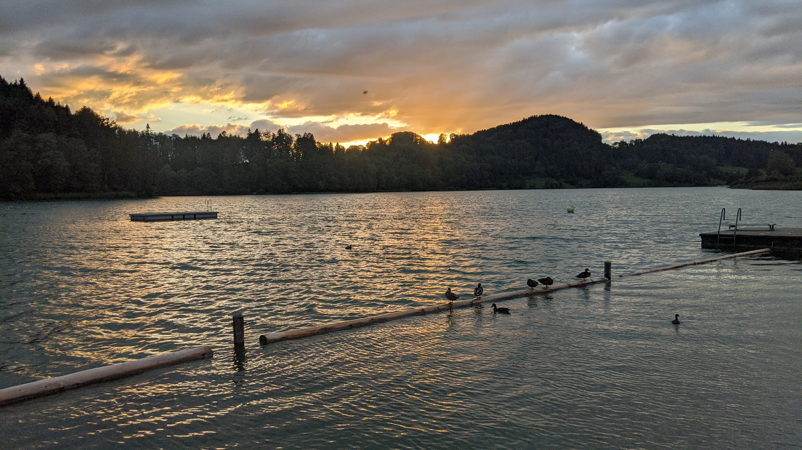
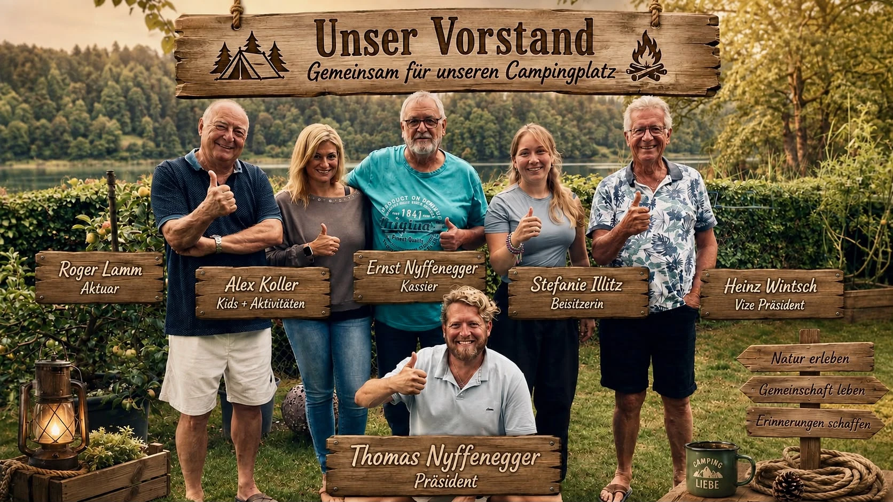
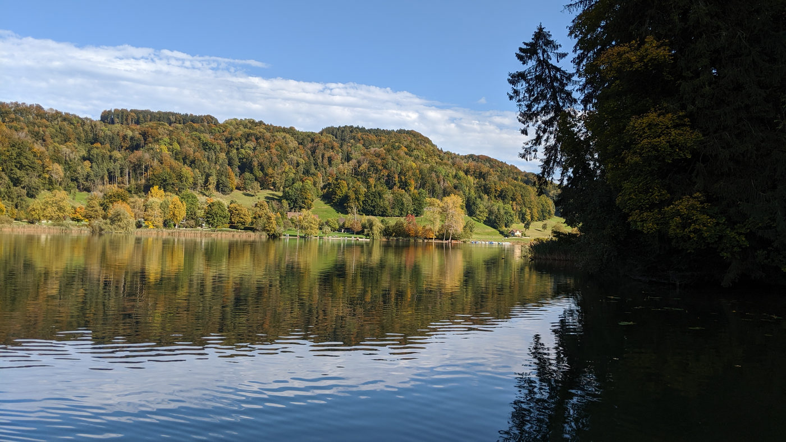

Geschichte
Im Jahr 1974 wollte der Kanton Zürich den damaligen Zeltplatz schliessen, da sich der Campingplatz im Naturschutzgebiet befindet. Um dieses zu verhindern, wurde seinerzeit der Verein Camping- und Naturfreunde Türlersee gegründet. Mit Erfolg kämpfte der Verein jahrelang um das Bestehen des Platzes. Mit dem Kauf des Areals durch die Gemeinde Hausen am Albis ist der Kampf nun ausgestanden und die Betriebskonzession bereitet uns keine Sorgen mehr.
Der Verein besteht aber weiterhin.
Zweck
Unser Ziel ist es, möglichst alle Saison-Camperinnen und Camper in unserem Verein zu haben um so den Zusammenhalt und die Freundschaft zu pflegen.


Vorstand
- Thomas Nyffenegger - Präsident
- Heinz Wintsch - Vizepräsident
- Ernst Nyffenegger - Kassier
- Roger Lamm - Aktuar
- Alex Koller - Kids + Aktivitäten
- Stefanie Illitz - Beisitzerin
Mitglieder
105aktive Mitglieder (Stand: 2025)
40.-Jahresbeitrag
